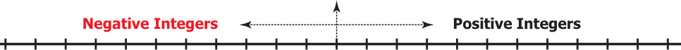
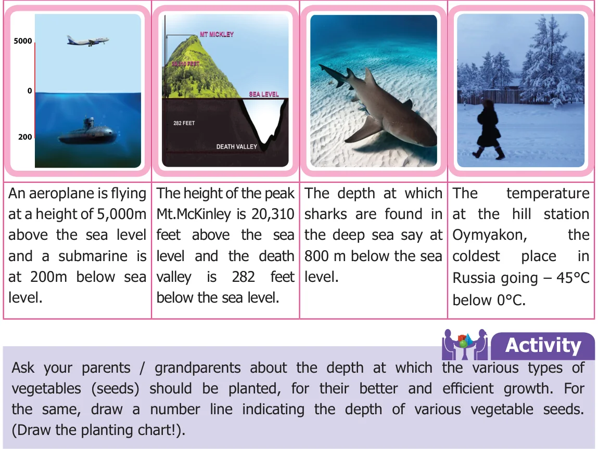
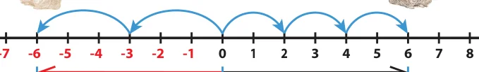
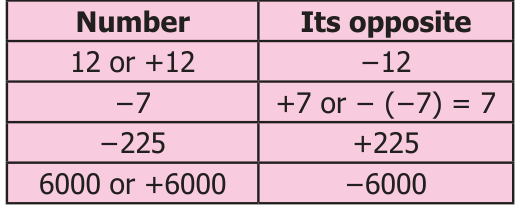
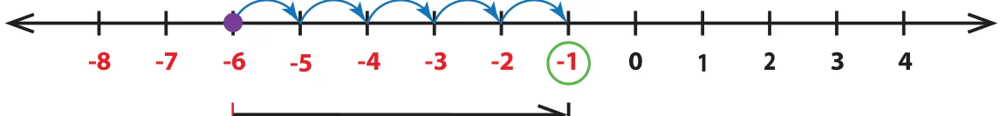
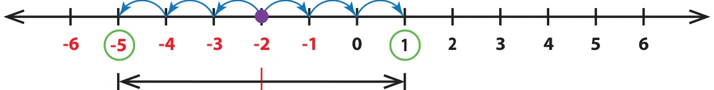

<!DOCTYPE html>
<html lang="en">
<head>
<meta charset="UTF-8">
<meta name="viewport" content="width=device-width,initial-scale=1">
<title>2.2 Introduction of Integers and its representation on a number line — Integers</title>
<meta name="description" content="Class 6 Mathematics · Term 3 · Integers · 2.2 Introduction of Integers and its representation on a number line">
<link rel="icon" href="data:image/svg+xml,<svg xmlns='http://www.w3.org/2000/svg' viewBox='0 0 100 100'><text y='.9em' font-size='90'>📘</text></svg>">
<link rel="stylesheet" href="../../../assets/book.css">
<link rel="stylesheet" href="https://cdn.jsdelivr.net/npm/katex@0.16.11/dist/katex.min.css" crossorigin="anonymous">
</head>
<body>
<header class="topbar">
<div class="topbar-in">
  <div class="crumb">
    <span class="c1"><a href="../../../index.html">Library</a> · <a href="../../index.html">Class 6 Mathematics · Term 3</a></span>
    <span class="c2">Integers · 2.2 Introduction of Integers and its representation on a number line</span>
  </div>
  <a class="tb-btn" data-nav="prev" href="../../02-integers/01-introduction-2.1/index.html" title="2.1 Introduction">←</a>
  <details class="drawer"><summary class="tb-btn" title="Sections in this chapter">☰</summary>
<div class="drawer-panel"><div class="dh">Integers</div><a href="../01-introduction-2.1/index.html">2.1 Introduction</a><a href="../02-introduction-of-integers-and-its-representation-on-a-numbe-2.2/index.html" aria-current="page">2.2 Introduction of Integers and its representation on a number line</a><a href="../03-ordering-of-integers-2.3/index.html">2.3 Ordering of Integers</a><a href="../04-exercise-2.1/index.html">Exercise 2.1</a><a href="../05-exercise-2.2/index.html">Exercise 2.2; Miscellaneous Practice Problems</a><a href="../06-summary/index.html">Summary</a></div></details>
  <a class="tb-btn" data-nav="next" href="../../02-integers/03-ordering-of-integers-2.3/index.html" title="2.3 Ordering of Integers">→</a>
  <button class="tb-btn" data-theme-toggle title="Toggle light / dark" aria-label="Toggle light or dark theme">◐</button>
</div>
<div class="progress"><span style="width:30.4%"></span></div>
</header>
<main class="wrap">
<div class="sec-head">
  <p class="eyebrow"><a href="../index.html">Chapter 2 · Integers</a></p>
  <h1>2.2 Introduction of Integers and its representation on a number line</h1>
  <p class="sec-meta">Textbook pages 4–7 · 6 figures</p>
</div>
<article class="prose">
<p>We know that when zero is included to the set of natural numbers then the set of numbers is called as Whole numbers. Now, let us recall the number line which shows the representation of whole numbers.</p>
<p>0 1 2 3 4 5 6 7 8 9 10 11 ...</p>
<p class="lead">Whole numbers</p>
<p>We have seen the need to extend the number line beyond 0 to its left. We call the numbers \(- 1\), \(- 2\), \(- 3\), … (to the left of zero) as negative numbers or negative integers and the numbers 1, 2, 3,… (to the right of zero) as positive numbers or positive integers. Hence, the new set of numbers …, -3, -2, -1, 0, 1, 2, 3,… are called Integers. It is denoted by the letter Z. The Integers are shown in the number line below.</p>
<aside class="sidenote"><p>Zero</p></aside>
<figure class="fig wide"></figure>
<p>... -11 -10 -9 -8 -7 -6 -5 -4 -3 -2 -1 ...</p>
<p>The plus and minus sign before a number tells, on which side the number is placed from zero. - symbol in front of a number is read as negative or minus. For example, \(- 5\) is read as negative 5 or minus 5.</p>
<h3 class="callout-h" id="s-note">Note</h3>
<p>●● The number line can be shown both in horizontal and vertical directions. ●● The number 0 is neither positive nor negative and hence has no sign. ●● Natural numbers are also called as positive integers and Whole numbers are also called as non-negative integers. ●● The positive and the negative numbers together are called as Signed numbers. They are also called as Directed numbers. ●● A number without a sign is considered as a positive number. For example, 5 is considered as +5.</p>
<p>The letter Z was first used by the Germans, because the word for Integers in the German language is ZAHLEN which means number.</p>
<p>Example 1 Draw a number line and mark the integers 6, \(- 5\), \(- 1\), 4 and \(- 7\) on it.</p>
<h4 class="callout-h" id="s-solution">Solution</h4>
<p>-11 -10 -9 -8 -7 -6 -5 -4 -3 -2 -1 0 1 2 3 4 5 6 7 8 9 10 11</p>
<p>1 Read the following numbers orally. Try these</p>
<ul class="qlist">
<li><span class="mk">i)</span><span class="lt">+24 ii) \(- 13\) iii) \(- 9\) iv) 8</span></li>
</ul>
<p>2 Draw a number line and mark the following integers.</p>
<ul class="qlist">
<li><span class="mk">i)</span><span class="lt">0 ii) \(- 6\) iii) 5 iv) \(- 8\)</span></li>
</ul>
<p>3 Are all natural numbers integers? 4 Which part of the integers are not whole numbers? 5 How many units should you move to the left of 3 to reach \(- 4\)?</p>
<h3 id="s-2-2-1-more-situations-on-integers">2.2.1 More situations on Integers</h3>
<figure class="fig table-fig wide"></figure>
<h3 id="s-2-2-2-opposite-of-a-number">2.2.2 Opposite of a number</h3>
<p>The idea of opposite of a number is not a new one. A few situations like, a man makes a profit of ₹ 500 or he loses ₹ 500 by selling an article; credit and debit of ₹ 75000 in a cash transaction of a business are ‘opposite’ to each other.</p>
<p>Think about the situation</p>
<p>Suppose two rabbits R and S jump along a number line (like) on the opposite sides of</p>
<ul class="qlist">
<li><span class="mk">0.</span><span class="lt">Rabbit R jumps 2 steps 3 times to the right of 0 and Rabbit S jumps 3 steps 2 times to</span></li>
</ul>
<p>the left of 0 as shown in the figure below. Where will both of them stand on the number line? Are they at equal distance from 0?</p>
<p>Rabbit S Rabbit R</p>
<figure class="fig"></figure>
<p>-8 -7</p>
<p>6 Units 6 Units</p>
<p>Clearly, the rabbit R stands at 6 and the rabbit S stands at \(- 6\) on the number line. The distance from 0 to 6 on the number line is 6 units and the distance from 0 to \(- 6\) on the number line is also 6 units.The numbers 6 and \(- 6\) are at the same distance from 0 on</p>
<p>the number line. That is, the rabbits R and S stand at the same distance from 0, but in opposite directions. Here, 6 and \(- 6\) are opposite to each other. That is, two numbers that are at the same distance from 0 on the number line, but are on the opposite sides of it, are opposite to each other. For every positive integer, there is a corresponding negative integer and vice versa. The opposite of each integer is shown in the figure.</p>
<p>... -6 -5 -4 -3 -2 -1 0 1 2 3 4 5 6 ...</p>
<p>Opposites</p>
<h3 class="callout-h" id="s-note">Note</h3>
<p>The opposite of the opposite of a number is the number itself. For example - ( \(- 5)\) read as negative of negative 5 or minus of minus 5 is equal to 5 itself. Now, it is easy to write the opposite of the numbers 12, \(- 7\), \(- 225\) and 6000. Note that, the opposite of a positive integer is negative, and the opposite of a negative integer is positive, whereas the opposite of zero is zero.</p>
<figure class="fig table-fig"></figure>
<p>The “opposites” are naturally more convenient to relate and understand with many of our daily-life situations like saving-spending, height above-below, where</p>
<ul class="qlist">
<li><span class="mk">i)</span><span class="lt">the saving is treated as positive and the spending is treated as negative.</span></li>
<li><span class="mk">ii)</span><span class="lt">the height above the sea level is regarded as positive and the height below the</span></li>
</ul>
<p>sea level is regarded as negative.</p>
<p>Example 2 Represent the following situations as integers:</p>
<ul class="qlist">
<li><span class="mk">i)</span><span class="lt">A gain of `1000 ii) \(20 ^{\circ} C\) below \(0 ^{\circ} C\) iii) 1990 BC (BCE)</span></li>
<li><span class="mk">iv)</span><span class="lt">A deposit of `15847 v) 10 kg below normal weight</span></li>
</ul>
<h4 class="callout-h" id="s-solution">Solution</h4>
<ul class="qlist">
<li><span class="mk">i)</span><span class="lt">As gain is positive, `1000 is denoted as + `1000.</span></li>
<li><span class="mk">ii)</span><span class="lt">\(20 ^{\circ} C\) below \(0 ^{\circ} C\) is denoted as \(- 20 ^{\circ} C\).</span></li>
<li><span class="mk">iii)</span><span class="lt">A year in BC (BCE) can be considered as a negative number and a year in AD (CE)</span></li>
</ul>
<p>can be considered as a positive number. Hence, 1990 BC (BCE) can be represented as \(- 1990\).</p>
<ul class="qlist">
<li><span class="mk">iv)</span><span class="lt">A deposit of `15847 is denoted as + `15847.</span></li>
<li><span class="mk">v)</span><span class="lt">10 kg below normal weight is denoted as \(- 10\) kg.</span></li>
</ul>
<p>Example 3 Using the number line, write the integer which is 5 more than \(- 6\).</p>
<h4 class="callout-h" id="s-solution">Solution</h4>
<p>From \(- 6\), we can move 5 units to its right to reach \(- 1\) as shown in the figure.</p>
<figure class="fig wide"></figure>
<p>5 units</p>
<p>Example 4 Find the numbers on the number line that are at a distance of 3 units in</p>
<p>the opposite directions to \(- 2\).</p>
<h4 class="callout-h" id="s-solution">Solution</h4>
<p>From \(- 2\), we can move 3 units to the left and right as shown in the figure.</p>
<figure class="fig wide"></figure>
<p>3 units 3 units</p>
<p>The required numbers are: 1 on the right of \(- 2\) and \(- 5\) to the left of \(- 2\).</p>
<h2 class="callout-h" id="s-try-these">Try these</h2>
<p>1 Find the opposite of the following numbers:</p>
<ul class="qlist">
<li><span class="mk">i)</span><span class="lt">55 ii) \(- 300\) iii)+5080 iv) \(- 2500\) v) 0</span></li>
</ul>
<p>2 Represent the following situations as integers.</p>
<ul class="qlist">
<li><span class="mk">i)</span><span class="lt">A loss of `2000 iv) \(18 ^{\circ} C\) below \(0 ^{\circ} C\)</span></li>
<li><span class="mk">ii)</span><span class="lt">2018 AD (CE) v) Gaining 13 points</span></li>
<li><span class="mk">iii)</span><span class="lt">Fishes found at 60 m below the sea level vi) A jet plane at a height of 2500 m</span></li>
</ul>
<p>3 Suppose in a building, there are 2 basement floors. If the ground floor is denoted as zero, how can we represent the basement floors?</p>
<p>ISRO Scientists often find it convenient to designate a given time as zero time and then refer to the time before and time after as being negative and positive respectively. This practice is followed in the launching of rockets. If the time to take off is 1 minute, then it is 1 minute before the launch and hence denoted as -1 minute.</p>
</article>
<nav class="pager"><a class="" data-nav="prev" href="../../02-integers/01-introduction-2.1/index.html"><span class="dir">← Previous</span><span class="t">2.1 Introduction</span><span class="ch">Integers</span></a><a class="nx" data-nav="next" href="../../02-integers/03-ordering-of-integers-2.3/index.html"><span class="dir">Next →</span><span class="t">2.3 Ordering of Integers</span><span class="ch">Integers</span></a></nav>
</main><footer class="site">Generated from the source textbook PDFs · text, figures and exercises belong to their respective publishers.</footer><script defer src="https://cdn.jsdelivr.net/npm/katex@0.16.11/dist/katex.min.js" crossorigin="anonymous"></script>
<script defer src="https://cdn.jsdelivr.net/npm/katex@0.16.11/dist/contrib/auto-render.min.js" crossorigin="anonymous"
  onload="renderMathInElement(document.body,{delimiters:[
    {left:'\\(',right:'\\)',display:false},
    {left:'$$',right:'$$',display:true},
    {left:'\\[',right:'\\]',display:true}],throwOnError:false,ignoredTags:['script','noscript','style','textarea','pre','code']})"></script>
<script src="../../../assets/book.js"></script>
<script defer src="../../../../assets/search.js?v=1789782769"></script>
<script defer src="../../../../assets/screenshot.js?v=2"></script>
</body>
</html>
